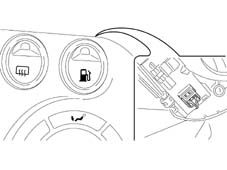

1058AE GAS/PETROL SELECTION FUEL SUPPLY CHECK
- Path
- Test > 10 ENGINE UNIT > 1058 GAS CIRCUIT > 1058AE GAS/PETROL SELECTION FUEL SUPPLY CHECK
- Kind
- test / check procedure
- Applies to
- engines: 1.6 16v; all production periods; only with equipment: BIPOWER
- Interactive page
- https://sloeber94.github.io/elrnDB-fMltpl/en/#/186003440
Applies to: engines: 1.6 16v; all production periods; only with equipment: BIPOWER
- With the equipment set to the Voltmeter function, check that, with the ignition ON and the selector button switched to Gas (button released) on entry to the Metafuel 5D0 control unit the voltage at pin 47 is 0V and the ideogram with the green light in the button is off.
- Switch the selector button to Petrol (button pressed) and check that on entry to the Metafuel 5D0 control unit the voltage at pin 47 is 12 V and the ideogram with the green light in the button is on.
